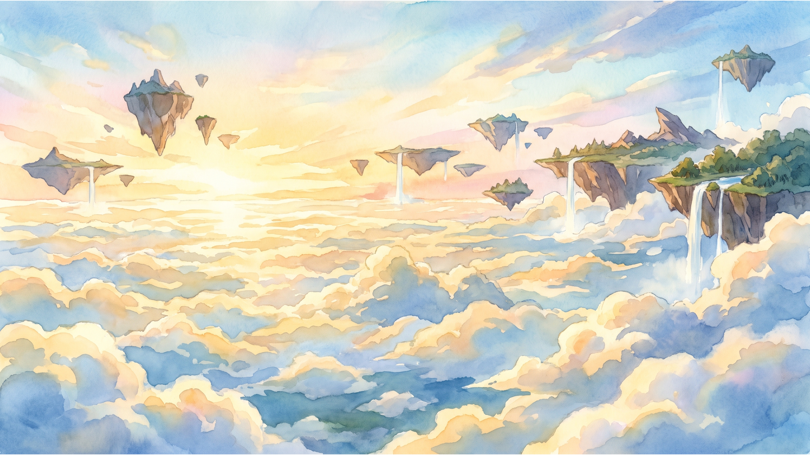
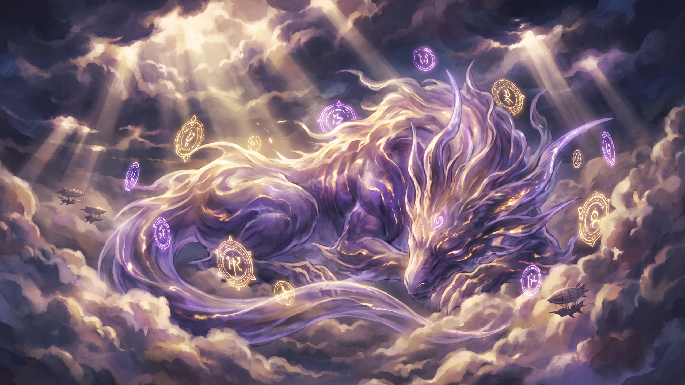

Estación de los Vientos
Día 34 / 65 · Año 512
 Foro de rol · Play-by-Post
Foro de rol · Play-by-Post
Un mar de nubes infinito. Islas flotantes, aeronaves y Bestias Primarias. Usa las flechas para conocer el mundo.
Los faros de Villa Farolar parpadean y las Órdenes reclaman skyfarers valientes.
Leer más →Aeronaves desviadas al oeste. El Gremio abre una orden T5 de contención.



PROTOTIPO v3.2 · Skydoms = paneles bento (como mares) · Off Topic debajo · hero-carrusel · tablón justo bajo el banner.